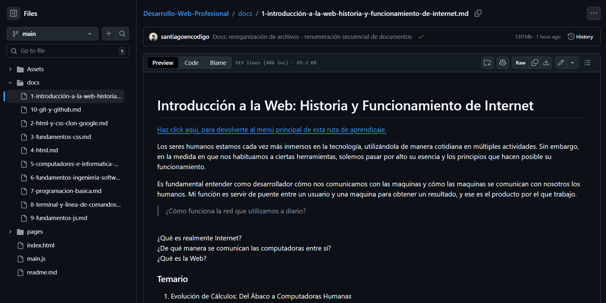

1. Introducción a la Web Historia y Funcionamiento de Internet
Documentación técnica orientada a la comprensión de los fundamentos de la computación y el funcionamiento de Internet, abordando desde conceptos básicos como bits y bytes hasta protocolos, navegadores y la evolución de la World Wide Web.